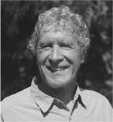

John Perkins has lived four lives: as an economic hit man (EHM); as the CEO of a successful alternative energy company, who was rewarded for not disclosing his EHM past; as an expert on indigenous cultures and shamanism, a teacher and writer who used this expertise to promote ecology and sustainability while continuing to honor his vow of silence about his life as an EHM; and now as a writer and activist who, in telling the real-life story about his extraordinary dealings as an EHM, has exposed the world of international intrigue and corruption that is turning the American republic into a global empire despised by increasing numbers of people around the planet.
As an EHM, John had the job of persuading economically developing countries to accept enormous loans for infrastructure development — loans that were much larger than needed — and to guarantee that the development projects would be contracted to US corporations such as Halliburton and Bechtel. Once these countries were saddled with huge debts, the US government and the international aid agencies allied with it were able to control these economies and to ensure that oil and other resources were channeled to serve the interests of building a global empire.
In his capacity as an EHM, John traveled all over the world and was either a direct participant in or a witness to some of the most dramatic events in modern history, including the Saudi Arabian Money-Laundering Affair, the fall of the shah of Iran, the death of Panama’s head of state, the subsequent invasion of Panama, and events leading up to the 2003 invasion of Iraq.
In 1980, Perkins founded Independent Power Systems Inc., an alternative energy company. Under his leadership as CEO, IPS became an extremely successful firm in a high-risk business where most of its competitors failed. Many “coincidences” and favors from people in powerful positions helped make IPS an industry leader. John also served as a highly paid consultant to some of the corporations whose pockets he had previously helped to line — taking on this role partly in response to a series of not-so-veiled threats and lucrative payoffs.
After selling IPS in 1990, John became a champion for indigenous rights and environmental movements, working especially closely with Amazon nations to help them preserve their rain forests. He wrote five books, published in many languages, about indigenous cultures, shamanism, ecology, and sustainability; taught at universities and learning centers on four continents; and founded and served on the board of directors of several leading nonprofit organizations.
Two of the nonprofit organizations he founded or cofounded, Dream Change and the Pachamama Alliance, have become models for inspiring people to make a better world, empowering individuals to create more environmentally sustainable, resource regenerative, socially just, and balanced communities. These organizations also have played major roles in helping Amazonian people protect their lands and cultures against encroaching development.
During the 1990s and into the new millennium, John honored his vow of silence about his EHM life and continued to receive lucrative corporate consulting fees. He assuaged his guilt by applying to his nonprofit work much of the money he earned as a consultant. Arts & Entertainment television featured him in a special titled Headhunters of the Amazon, narrated by Leonard Nimoy. Italian Cosmopolitan ran a major article on his workshops in Europe that focused on inspiring participants to experience individual transformation and to take actions that create more harmonious relationships between human societies and the planet. Time magazine selected Dream Change as one of the thirteen organizations in the world whose websites best reflect the ideals and goals of Earth Day.
Then came September 11, 2001. The terrible events of that day led John to drop the veil of secrecy around his life as an EHM, to ignore the threats and bribes, and to write Confessions of an Economic Hit Man. He came to believe in his responsibility to share his insider knowledge about the role that the US government, multinational “aid” organizations, and corporations have played in bringing the world to a place where such an event could occur. He wanted to expose the fact that EHMs are more ubiquitous today than ever before. He felt that he owed this to his country, to his daughter, to all the people around the world who suffer because of the work he and his peers have done, and to himself. In this book, he outlined the dangerous path his country is taking as it moves away from the original ideals of the American republic and toward a quest for global empire.
Confessions of an Economic Hit Man became an international best seller. It spent more than seventy weeks on the New York Times best seller list, has sold more than 1.25 million copies, and has been published in more than thirty languages. It launched John on a global speaking tour that has continued ever since. He has taken worldwide his message of the need to replace the death economy with a life economy, speaking at corporate summits, to large groups of CEOs and other business leaders; and at consumer conferences and music festivals; and he has taught or lectured at more than fifty universities.
John has been featured on ABC, NBC, CNN, CNBC, NPR, A&E, and the History Channel; been interviewed in Time, the New York Times, the Washington Post, Cosmopolitan, Elle, Der Spiegel, and many other publications; and appeared in numerous documentaries, including The End of Poverty?, Zeitgeist Addendum, and Apology of an Economic Hit Man. He was awarded the Lennon Ono Grant for Peace and the Rainforest Action Network Challenging Business As Usual Award.
Since Confessions of an Economic Hit Man, John has written The Secret History of the American Empire (Penguin) and Hoodwinked (Random House). He also is the author of books on indigenous cultures and transformation, including Shapeshifting, The World Is As You Dream It, Psychonavigation, Spirit of the Shuar, and The Stress-Free Habit (all from Inner Traditions).
To learn more about John, to connect with him on his social channels, to order his books, to subscribe to his newsletter, or to contact him, please visit www.johnperkins.org.
To discover more about the work of Dream Change and Pachamama Alliance, two of his 501(c) organizations, please visit www.dreamchange.org and www.pachamama.org.